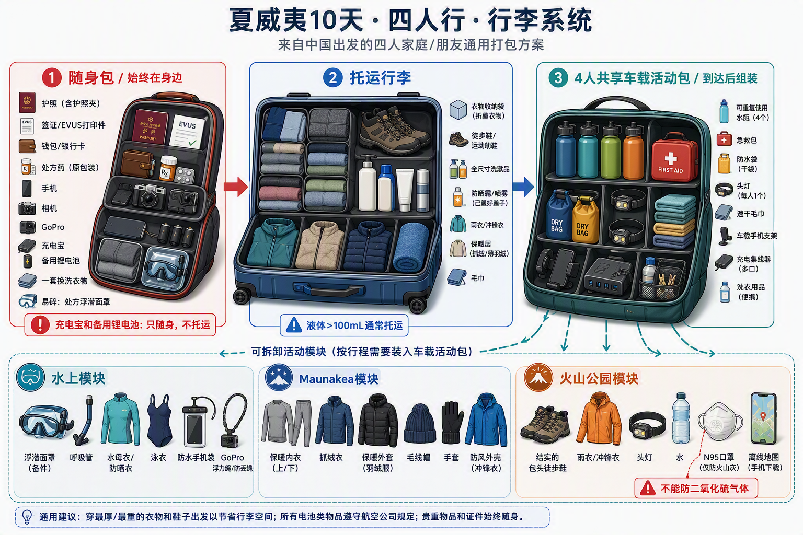

🏝️ Oahu (欧胡岛) — Sep 27 ~ Oct 1
🌋 Big Island (大岛) — Oct 1 ~ Oct 6
🌤️ 天气预判 & 穿衣指南
Oʻahu 9/27–10/1 · Big Island 10/1–10/6
按每天路线的海岸、迎风面与高海拔微气候准备，出发前请按下方时间节点更新实时预报。
✅ 已于 9/20 更新（距出发约 1 周）——现在进入可参考的中期预报窗口。
最新趋势（据 NWS Honolulu / AccuWeather 9 月中旬预报）：Honolulu 白天 29–32°C、夜间 24–25°C，ENE/NE 信风 10–20 mph；Kona 侧 10 月白天回落到 26–28°C、夜间 20–22°C，干燥晴朗。
⚠️ 仍在中太平洋飓风季（至 11/30）：2026 官方展望 5–13 个热带气旋，高于常年，出发前请持续关注 NWS 警报。浮潜、出海、火山和观星活动前 24–48 小时 再确认小时天气、风浪和官方通告。
🏖️ Oʻahu 海边白天
约 29–32°C，日晒强、体感偏湿；夜间 24–25°C，海水约 26–27°C。
🌤️ Kona 背风面
10 月白天约 26–28°C、干燥晴朗；夜间 20–22°C，是全程最稳定的晴天区。
🌧️ 迎风面 / Hilo
短阵雨常见、多在夜间，来得快去得快；轻量防水外套比雨伞实用。
🌋 火山公园
约 14–23°C，晴、雾、阵雨和强风可能在同一天快速切换。
⭐ Maunakea VIS
日落后约 4–10°C；强风时体感可能接近 0°C，必须准备冬季保暖层。
🏝️ Oʻahu 欧胡岛逐日指南
9/27 · Waikīkī 抵达日
🌤️ 25–32°C；晴到多云，ENE 信风，午后可能有短阵雨，海边日晒明显。
👕 短袖、短裤或薄裙、凉鞋；飞机和室内冷气环境可穿薄长裤，随身带薄防晒外套。
9/28 · Hoʻomaluhia → Kualoa → Kailua
🌦️ 24–29°C；迎风东岸云量较多，植物园和牧场可能有短阵雨、湿地或泥泞。
👕 速干短袖＋运动短裤/薄长裤；E-bike 穿包头包跟鞋；带轻薄防水外套和备用上衣，避免白鞋。
9/29 · 鲨鱼笼潜＋北岸环岛
🌊 25–31°C；清晨船上风大，体感约 22–24°C；9月底北岸可能开始出现涌浪。
👕 提前穿泳衣，外搭速干衣；带防风外套、毛巾和全套干衣。易晕船者按说明提前服用防晕药。
9/30 · 恐龙湾＋东南海岸＋钻石山
☀️ 25–31°C；东南海岸日晒和风都较强，15:00攀登钻石山仍可能很热。
👕 泳衣＋UPF水母衣；午餐后换干燥运动装和防滑鞋。帽子、太阳镜，每人至少准备 1–1.5L 水。
10/1 · Waikīkī → HNL → KOA（AS1088）
🌤️ 25–31°C；Honolulu 与 Kona 均偏暖，局部短阵雨通常持续不久。
👕 轻便短袖＋薄长裤，薄外套应对机舱冷气；07:45 退房需早起，泳衣、防晒和一套换洗衣放随身行李，下午到 Kona 可直接下水。
🌋 Big Island 大岛逐日指南
10/1 · KOA → Kahaluʻu → Aliʻi Drive
☀️ 26–30°C；Kona背风面 10 月转干爽晴朗，午后山侧可能积云，海水约26–27°C。
👕 泳衣、速干衣、UPF水母衣和涉水鞋；日落后换干衣，薄外套通常足够。
10/2 · Two Step＋咖啡庄园＋蝠鲼夜潜
🌊 24–30°C；South Kona通常较干，夜间船上有风，出水后体感约20–23°C。
👕 水母衣＋涉水鞋保护熔岩台阶；夜潜另带毛巾、全套干衣、薄抓绒和防风外套。
10/3 · Kona → Punaluʻu → 火山地区 → Hilo
🌦️ Kona约25–30°C；Punaluʻu约24–29°C且有风；火山地区 15–22°C、可能起雾下雨；Hilo湿润。
👕 分层穿搭：短袖＋薄长裤，车内备抓绒和防水外套；进入火山地区换包头鞋。
10/4 · Hilo瀑布＋Maunakea VIS
🌧️ Hilo 22–28°C，阵雨常见；VIS下午约8–14°C，日落后约4–10°C，强风时体感更低。
👕 白天速干衣＋雨壳；上山换保暖内层、抓绒/轻羽绒、防风外壳、长裤、厚袜和包头鞋，带帽子与薄手套。
10/5 · 火山国家公园完整日
🌋 14–23°C；山口天气多变，晴、雾、阵雨和强风可能交替；日落后约10–15°C。
👕 排汗内层＋抓绒＋防水防风外套；薄长裤和抓地运动鞋。若等天黑看红光，增加保暖层并带头灯。
10/6 · Hilo → Waipiʻo → Waimea → KOA
🌦️ Hilo/Waipiʻo约22–28°C；Waimea海拔较高，约 17–24°C、多风；Kona恢复炎热干燥。
👕 短袖＋薄长裤，轻防水外套放手边；不要把保暖衣过早塞进行李箱深处。
🧳 穿衣组合 & 打包清单

📷 行李系统图未找到。请把图片保存为
images/hawaii-luggage-system.png
（与本 HTML 同目录下的 images 文件夹）。
🧳 夏威夷 10 天 · 四人行 · 行李系统：① 随身包（护照/证件/药品/电子设备/充电宝——只随身不托运）· ② 托运行李（衣物、徒步鞋、洗漱、外套）· ③ 4 人共享车载活动包 + 水上 / Maunakea / 火山公园三个可拆卸模块。⚠️ 火山公园活动人员不能带二氧化硫气体敏感人群风险，备 N95。
🏊 海滩 / 浮潜日
- ☐ 泳衣（建议每人2套）
- ☐ UPF 50+ 长袖水母衣
- ☐ 速干短裤
- ☐ 涉水鞋/防滑凉鞋
- ☐ 礁石友好型防晒霜
- ☐ 毛巾、干衣和防水湿衣袋
🚗 普通自驾日
- ☐ 速干短袖
- ☐ 轻薄短裤或长裤
- ☐ 舒适运动鞋
- ☐ 轻量防水外套放车里
- ☐ 帽子、太阳镜
- ☐ 水壶与便携电解质
🏔️ 高海拔 / 火山日
- ☐ 排汗内层
- ☐ 抓绒或可压缩轻羽绒
- ☐ 防风防水外层
- ☐ 长裤、厚袜
- ☐ 包头运动鞋/徒步鞋
- ☐ 帽子、薄手套、头灯
✅ 全程随身提醒
- ☐ 防晕船药
- ☐ 驱蚊液
- ☐ 补涂用防晒霜
- ☐ 备用充电宝
- ☐ 可重复使用水瓶
- ☐ 小型急救用品
🚨 活动前必须复查
- 鲨鱼笼潜（9/29）：重点查看北岸涌浪和运营商是否确认出航；下雨不一定取消，但强风浪可能取消。
- 恐龙湾（9/30）：查看海况与官方开放状态；强水流或水母警报时不要勉强下水。
- Two Step / 蝠鲼夜潜（10/2）：分别确认浪高、入水条件及船方通知；准备出水后的保暖干衣。
- Maunakea VIS（10/4）：上山当天查云量、阵风、道路与游客中心状态；本行程只到VIS，不驾驶2WD继续上山。
- 火山公园（10/5）：当天查看喷发、空气质量、火山气体和道路/步道关闭信息，绝不越过封锁线。
🔗 临近出发时查看
✈️ 航班信息 & 汇合计划
A 组：上海 → 香港 → 首尔 → 檀香山（9/26 出发，9/27 上午抵达）
B 组：达拉斯 → 檀香山（9/27 上午出发，当日抵达）
两组均在 HNL Terminal 2 到达，全程 4 人合并后一起前往 Waikīkī。
📌 两组抵达时间只差约 2 小时，9/27 当天在 HNL T2 汇合
A 组 10:55 落地（国际到达，需入境+海关），B 组 12:55 落地（美国国内段，免检）。
按这个节奏，A 组出关约 12:15，B 组取完行李约 13:25，13:30 左右在 T2 到达层汇合最顺，合并一辆车进城，正好赶上酒店 15:00 入住。
⚠️ 仍有两件事需要你确认：① B 组两段航班号；② 10/6 WN2226 的目的地（详见对应卡片）。
🛫 A 组｜上海出发（3 段）
A 组 · 9/26 出发 → 9/27 10:55 抵达 HNL｜全程约 43.5 小时
9C8715
春秋航空
上海浦东 PVG · T2 → 香港 HKG · T1
9/26 09:15 → 12:20（均为当地时间 UTC+8）
飞行约 3 小时 05 分 ｜ 建议 07:00 前到浦东 T2（国际航班提前 2 小时以上）
🕓 香港中转约 5 小时 35 分（12:20 → 17:55）。✅ 已确认行李不直挂：需在 HKG 提取行李 → 出到达层 → 到 T1 大韩航空柜台重新值机托运。
大韩值机柜台一般起飞前 3 小时开放（约 14:55），所以 12:20 落地后会有一段等待：建议先在到达层用餐寄存，约 14:45 再上出发层排队。时间充裕，不用紧张。
KE2006
大韩航空
香港 HKG · T1 → 首尔仁川 ICN · T2
9/26 17:55 → 约 22:10–22:30
飞行约 4 小时 ｜ 香港 UTC+8 → 首尔 UTC+9（钟面 +1 小时）
🌙
首尔仁川中转约 22 小时 35 分（已定为入境住一晚）：9/26 约 22:30 落地 → 9/27 21:05 起飞。
🏨 已订住宿：机场旅馆 Incheon Airport Guesthouse
地址：仁川市永宗区 운서동 공항로424번길 50，월드게이트 빌딩 6 층 629 号（接待处在 6 楼）
英文/罗马字：Gonghang-ro 424beon-gil 50, Worldgate Bldg 6F #629, Unseo-dong, Yeongjong-gu, Incheon
电话：
+82 10-3305-3060（建议提前告知约 23:00 后入住，确认前台是否有人）
📍 位于永宗岛
운서 Unseo 一带，距 ICN 约 10–15 分钟车程；可坐机场磁悬浮 / 机场铁路到
Unseo 站，或直接打车。深夜落地建议直接打车。
⚠️
因为行李不直挂，你们必须在仁川提取行李，也就是一定要入境韩国——签证 / K-ETA 不是可选项。请务必按自己的护照类型向官方确认后再出行：
K-ETA 官网 ↗ ·
韩国签证门户 ↗
🧳 第二天（9/27）KE53 21:05 起飞，建议
18:00 前回到 ICN T2 办值机托运；白天可在永宗岛就近活动，
不建议进首尔市区（单程约 1 小时，来回太赶）。
KE53
大韩航空
首尔仁川 ICN · T2 → 檀香山 HNL · T2
9/27 21:05 → 9/27 10:55（HST）
飞行约 8 小时 50 分 ｜ 波音 787-10 ｜ 与达美 DL7939 共享代号
🌏 不是笔误：东行跨国际日界线会「倒回」一天，21:05 晚上从首尔起飞，落地檀香山仍是 9/27 上午 10:55，等于白捡半天行程。
🛫 B 组｜达拉斯出发（United，经停一站）
B 组 · 9/27 07:00 出发 → 12:55 抵达 HNL｜全程约 10 小时 55 分
UA
经停
达拉斯 DFW → （经停一站）→ 檀香山 HNL · T2
9/27 07:00（CDT）→ 12:55（HST）
达拉斯 9 月为夏令时 UTC−5，檀香山 UTC−10，钟面时差 5 小时；07:00 → 12:55 实际耗时约 10 小时 55 分
🇺🇸 全程美国国内航段，落地无需入境和海关，取托运行李约 20–30 分钟即可出到达层，预计 13:25 前后可以汇合。
ℹ️ 关于「直飞」：DFW→HNL 的真正直飞只有美国航空一家（AA5，约 11:20 起飞）。United 卖的 DFW→HNL 都要经它自己的枢纽（SFO / LAX / DEN / IAH），所以你这班是经停 / 中转一站，与 12:55 抵达的信息一致。
👉 把两段航班号和经停机场发我，我可以补上经停时长，并在首段延误时帮你判断是否会赶不上后段。
📋 航班总表
| 组 | 航班 | 航段 | 起飞（当地） | 抵达（当地） | 时长 |
|---|
| A | 9C8715 | PVG T2 → HKG T1 | 9/26 09:15 | 9/26 12:20 | 3h05m |
| A | KE2006 | HKG T1 → ICN T2 | 9/26 17:55 | 9/26 约 22:10–22:30 | 约 4h |
| A | KE53 | ICN T2 → HNL T2 | 9/27 21:05 | 9/27 10:55 | 8h50m |
| B | UA（经停 1 站） | DFW → HNL T2 | 9/27 07:00 | 9/27 12:55 | 约 10h55m |
| 合 | AS1088 | HNL → KOA | 10/1 10:59 | 10/1 11:46 | 47m |
| 合 | WN2226 | KOA → 待确认 | 10/6 19:00 | — | — |
🏝️ 岛际 & 回程
10/1（四）欧胡岛 → 大岛｜AS1088
AS1088
阿拉斯加
檀香山 HNL → 科纳 KOA
10/1 10:59 → 11:46
飞行约 47 分钟 ｜ 波音 717-200（原夏威夷航空岛际机型）｜ 与日航 JL4713 共享代号 ｜ 有托运行李
⏰ 当天需要早起：有托运行李 + 岛际航班，建议 07:45 退房、09:00 前到 HNL。9/30 晚已还车，所以要叫 Uber / Lyft XL 去机场（约 25–40 分钟）。
🧳 岛际航班托运行李通常另收费，请提前在 App 上确认件数与费用。
10/6（二）离开大岛｜WN2226
WN2226
西南航空
科纳 KOA → 目的地待确认
10/6 19:00 起飞
西南在 10/6 有 KOA→HNL 的岛际班（约 1 小时），也有飞美国本土的班次
⚠️ 我没能独立核实 WN2226 的目的地：公开航班号库目前显示这个号在美国本土航线上（西南每季会重排航班号）。请确认是 KOA→HNL 还是 KOA→美国本土，我再补上抵达时间。
🚗 倒推安排：最晚 17:00 到 KOA 完成还车（还车点在机场附近，需班车接驳，留足 20–30 分钟），也就是 13:30 前离开 Hilo。
🤝 9/27 汇合计划
✅ 推荐：T2 机场汇合，一起进城
两组落地只差 2 小时，A 组等待约 1 小时，是最省事的方案。
- 10:55 A 组 KE53 落地 T2
- 11:00–12:15 A 组入境、取行李、过海关
- 12:15–13:25 A 组在 T2 到达层吃午餐 / 买水等待
- 12:55 B 组落地 T2 → 取行李约 20–30 分钟
- 13:30 汇合：T2 二层到达层、行李提取区出口外
- 13:45 合并 1 辆 Uber / Lyft XL（4 人 + 4 箱）出发，约 25–40 分钟
- 约 14:30 到酒店；15:00 正式入住，衔接刚好
🅱️ 备选：酒店汇合
仅在 B 组航班延误超过 1 小时时启用。
- A 组先走（Uber XL，或 TheBus 20 路 $3/人）
- 在 Romer House 前台寄存行李，先去 Waikīkī 吃饭休息
- B 组落地后直接打车到酒店
- 汇合点：Romer House Waikīkī 前台，415 Nāhua St
- A 组已飞了 43 小时，这个方案能让他们早点洗澡躺平
📱 汇合前必做
- 提前建微信 / WhatsApp 群，落地立刻报「已落地 + 位置」
- 确认落地后能上网：美国 eSIM 或开通国际漫游，别依赖机场 Wi-Fi 才联系
- 约定备用汇合点（酒店前台）以防手机没信号
- 两组各自记住对方航班号，可在航司 App 里查实时到达
- HNL T2 到达在二层，接送车辆在到达层外侧 Ground Transportation 区
🚗 与租车方案的衔接
- 9/27 不租车：省两晚酒店停车费（约 $55/天）+ 一天闲置租金
- 抵达日用 Uber / Lyft XL 或 TheBus 进城
- 9/28 08:00–08:15 在 Waikīkī 门店取车，当天直接去 Hoʻomaluhia + 古兰尼
- 9/30 晚上还车，10/1 飞大岛当天不需要欧胡岛的车
🕐 时差对照
| 地点 | 时区（9 月） | 比檀香山快 | 备注 |
|---|
| 上海 / 香港 | UTC+8 | +18 小时 | 无夏令时 |
| 首尔 | UTC+9 | +19 小时 | 无夏令时 |
| 达拉斯 | UTC−5（CDT） | +5 小时 | 9 月仍是夏令时 |
| 檀香山 / 大岛 | UTC−10（HST） | — | 全年不调夏令时 |
✅ 出发前检查
A 组
- ☐ 美国签证 / ESTA 状态有效
- ☐ 韩国入境签证 / K-ETA（必须项，因行李不直挂）
- ☑ 仁川住宿已订：机场旅馆 Incheon Airport Guesthouse
- ☐ 已告知酒店约 23:00 后入住
- ☐ 春秋航空行李额度（廉航额度低，超重另收费）
- ☐ 香港 14:45 上出发层重新值机
- ☐ 9/27 18:00 前回到 ICN T2 办 KE53 值机
B 组
- ☐ 把两段航班号 + 经停机场发我
- ☐ 经停衔接时间是否够（建议 ≥ 1 小时）
- ☐ 托运行李件数（与 4 人 4 箱方案一致）
- ☐ 落地后网络可用（eSIM / 漫游）
两组共同
- ☐ 酒店预订确认号（Romer House Waikīkī）
- ☐ 9/28 租车确认号 + 驾照 / 国际驾照翻译
- ☑ 9/29 鲨潜已订（4 人，已付 $509.43）
- ☑ 10/1 岛际 AS1088（10:59 → 11:46，有托运行李）
- ☐ AS1088 托运行李费用已确认
- ☐ 10/6 WN2226 目的地待确认
- ☐ 10/2 蝠鲼夜潜预订
- ☐ 大岛租车（KOA 取还，10/1–10/6）